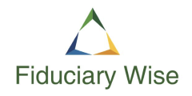
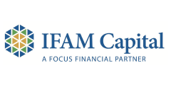

A multiple employer plan (MEP) is a qualified retirement plan maintained by two or
more employers who are not related under control groups, trades, businesses under
common control or affiliated service groups. A participating employer (PE) is any
employer that participates in the MEP. As plans join the MEP, plan assets remain
separate but, allow for greater buying power. The MEP still provides some
flexibility and customization in design while providing greater efficiencies in the
management and administration as a MEP.
The Chart below identifies the similarities and differences between a MEP and a
traditional retirement plan as well as the benefits available to the participating
employers (PE) inside the MEP.
What makes The Participant First 401k MEP by Ekstra so much better?
Ekstra protection — Tired of being told you're a fiduciary?
Delegation doesn't change or limit your 401k liabilities and is commonly referred
to as a co-fiduciary relationship. We are the named fiduciary so that liability
and responsibility falls squarely on us — not you.
Ekstra savings through economies of scale.
By design, the Ekstra 401(k) MEP is structured to help small and medium-sized
plans achieve the same economies of scale as larger plans. The Ekstra difference
is that those efficiencies mean more money stays in the participant's accounts.
Over time, that will greatly improve participant retirement outcomes.
Ekstra time to focus on your core business.
The Ekstra 401(k) MEP eliminates most of the day-to-day burdens that come with a
401(k) plan — leaving you with very little to do. You'll continue to submit
contributions and provide employee data which typically can be automated. That
means more time to focus on building your business.
Ekstra expertise with a world class team!
Ekstra brings together a team of the best of the best — to ensure your 401k
is world-class! All this and more at a fraction of the cost of typical 401(k)
plans.
The Participant First 401(k) MEP by Ekstra is
transparent, secure and efficient!
Because it's a MEP, it's
more affordable That's why participants
do better with us
.
- Don't want to be a fiduciary
- Better outcomes for participants
- Simple, transparent & secure.
- More time to focus on business
That's Ekstra!
Our team
The Ekstra 401k MEP brings together a team of retirement plan specialists to
operate and provide a best in class solution for your retirement plan. Our
unique participant first approach is designed to achieve better retirement
outcomes than available from anyone else.

Fiduciary Wise has been selected to be the ERISA 402(a) Named Fiduciary and
3(16) Plan Administrator. They are an independent fiduciary and will oversee
both the operation and administration of the plan.

Nationwide Financial has been selected as the plan record-keeper. The Nationwide
platform empowers participants with access to a wide range of investment choices
they want and need through a secure, broad and flexible platform that is unique
to them alone in the 401(k) market.

InWest Retirement Solutions will provide the Third Party Administration (TPA)
services. They are responsible for the plan's compliance, testing and submission
of required plan documents to the necessary regulatory agencies.
The Dayton Company is a boutique registered investment adviser with an exclusive focus on 401k plans. Their deep understanding and holistic view of the 401k ecosystem brings tremendous value to the design, flow and function of retirement plans through relentlessly pursuing the ultimate 401k.
Counsel Trust will be the Institutional Trustee for the plan.
Planalytiq is a 401(k) analytics firm that will measure and document the
transition from your current plan and service providers to ensure that decision
is in the best interest of plan participants.

IFAM Capital is the independent ERISA 3(38) Investment Fiduciary that selects, monitors, and makes changes, as necessary, to the plan's investment choices.
Flexible Investment Advice for participants. Each participant has the option to
work with the investment advisor they prefer. This allows participants to work
with an advisor who is familiar with their unique and personal investment goals.
Independent advisor fees may be paid from the participant's plan assets upon
request. There is no plan designated participant investment advisor in order to
provide this extraordinary opportunity for plan participants.